前言
雖然，Docker 的文章，寫了第一篇後，就一直欠到現在….( 跪 )，然後現在又令開支線，( 跪到趴在地上了 )
但既然打算在 macOS 上處理 ASP.NET Core. 就想說，當作一篇記錄，一路寫下去，
而最近公司忙碌的程度，真的是太高了，所以請大家諒解….
其實很久很久以前，大概就寫過類似的文章，那時候 .NET Core 也還在發展中，
本來是想說，隨著發展中，就持續寫下去，但後來，不幸的是，
在發展的過程中，我的 MacBook 既然先死掉了!! ( 抖抖 )
於是，以前的文章也就不斷了流產了，後來筆電死掉後，心想，既然要換新筆電，
就等新的上市吧！！
但沒想到，這次既然大改版，等了很久 ( 而且等到一個對開發人員非常難用的 Touch Bar 版本… )
總之，既然抱怨完畢，還是要抽空開始寫文章，所以這個系列，就又復活了….
備註：
這篇主要是由 .NET 官方文件 而來，
而寫這篇文章的時候，官方文件的 SDK 還落在 Preview2 ，而目前寫這篇文章最新的 SDK 為 RC4，
預計三月就會有 RTM 了，能忍的朋友，可以先忍一下。
而 preview2 和 RC 3 後版本，最大的差異，就是陸續的將 project.json 移動到 .csporj 底下，
最後，RC 4 也有很多不穩定的地方，要使用者要多加留意。
最後，這篇文章會根據以上的內容，進行大量的補充，讓大家在過程中，可以更加地了解細節。
安裝 最新版本的 OpenSSL
在開始安裝準備在 macOS 上開發 .NET Core 之前，我們第一步驟當然是要裝 .NET Core 啊！！
但是在裝 .NET Core 之前，我們必須先安裝最新版的 OpenSSL，
因為目前的 .Net Core 必須使用 1.0.1 以上的 OpenSSL 版本，
但 macOS 上，目前的版本為 0.9.8，而且未來應該也不會更新了
另外一個理由是因為到時候我們使用 Visual Studio Code 來進行 Debug 的時候，也必須要用到。
至於使用 Brew 安裝新版的 OpenSSL 會不會對原本的 macOS 有影響，
根據 .NET Code CLI 的 GitHub 文章指出，因為來 Apple 不會再採用 OpenSSL，
而會採用 TLS 或是自家的加密技術，故並不會造成 macOS 的影響。
原文可以參考這邊
Homebrew may also show the following warning:
Apple has deprecated use of OpenSSL in favor of its own TLS and crypto libraries
This warning is meant for the software that uses OpenSSL (in this case, .NET Core) and not for the end-user that is installing said software. Homebrew installation doesn’t touch either the existing Apple crypto libraries or existing OpenSSL 0.9.8 version, so there is no impact on any software that
uses either one of those crypto solutions and is already installed.
而在安裝 OpenSSL 之前，我們必須先安裝 Brew 這個 macOS 的套件管理工具
( 好多之前又之前的前置作業….抖抖 )
好吧，首先我們先到 Brew 的官網，
安裝的方式很簡單，官網也有中文，就把底下那段給複製貼上到終端機去執行就可以了。
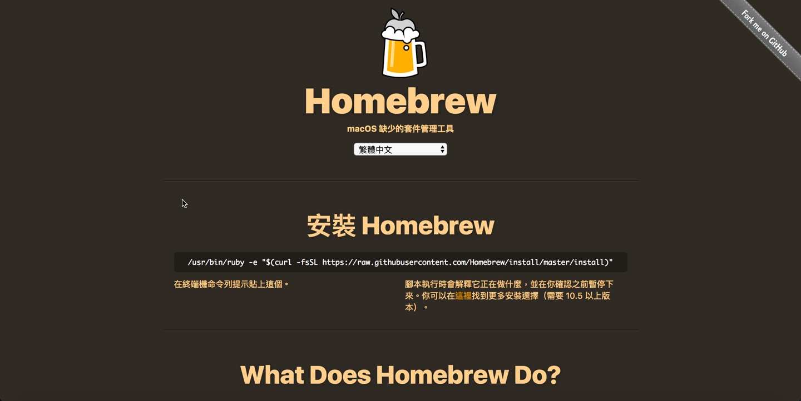
接下來，我們要先 brew update 一下，更新 Brew 的套件列表 ( 其實剛裝完的朋友，理論上就是最新的了 )
然後使用 brew install openssl
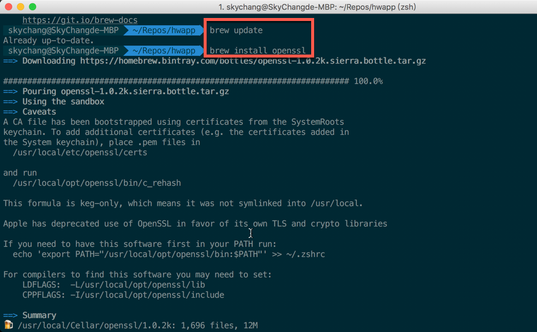
接著，我依照 .NET Core 官網的指示，建立連結過去。
這邊要 Link 的原因，根據官方所敘述，是因為 brew 也不會自動的 Link OpenSSL 了。
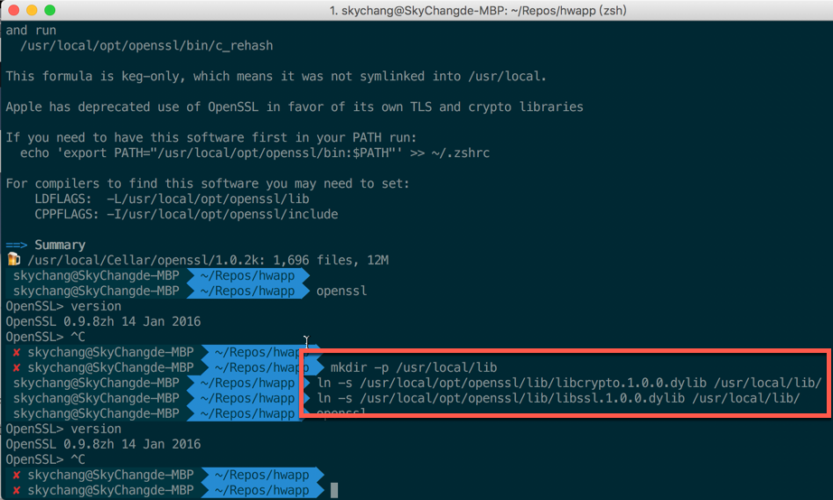
到這邊，OpenSSL 就安裝完成了。
安裝 .NET Core SDK
接著，我們到 .Net Code CLI 的 GitHub 進行下載，
目前這邊的版本為最新版本，但未來還是建議大家去.NET Core 官網下載頁面 看看。
在官網，您可以選擇長期支援版本 LTS，或是現行版本 Current ，Current 的更新速度快，
也比較有新的 API 等等可以使用， 而如果是 LTS ，則只會專注於 Bug 的修訂等等
通常企業會比較使用 LTS 版本，如果是個人開發，通常玩一些新東西，就會使用 Current 版本。
至於 GitHub 的版本，目前看起來是包含 1.0.x 和 1.1 版本。
另外，SDK 和 Runtime 的差異，簡單的說，
.NET Core 裡面只有 Runtime ，不包含 CLI 工具 ( 透過 CLI 可以使用指令建立專案，Build 之類的 )版本。
.Net Core SDK 就是 .Net Core ( Runtime ) 加上 CLI Tool。
所以，如果是要裝在主機，只要裝 .NET Core 就好。
如果是要開發環境，就要裝 .NET Core SDK。
官網的下載附圖如下，目前 SDK 只到 Preview2
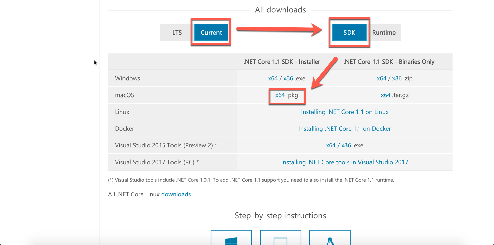
而 GitHub 的下載頁面，目前到 RC 4 ，新非常多。
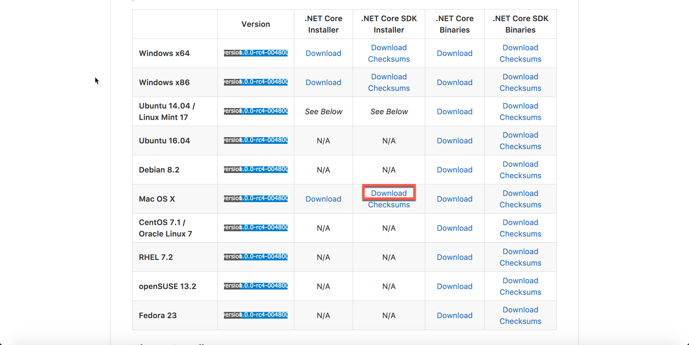
這邊小弟使用 RC 4 版本進行安裝。
當然，安裝過程十分簡單，就不截圖嚕。
試玩 Hello World
接著，在我們進入 ASP.NET Core 的開發之前，我們先建立一個純的 .NET Core Command Line 程式試試看。
我們這邊先建立一個新的資料夾 hwapp ( 使用 mkdir hwapp )，然後切換至那個資料夾，並執行
1 | dotnet new console |
透過 dotnet new ，他會建立一個空的 Hello World 應用程式。
( Sky 的名言錄 ： 學一個應用程式，第一個一定要先 Hello World ，不然會被程式詛咒~~ 抖抖 )
備註：目前 RC 4 已經提供了許多的範本，可以參考最底下。
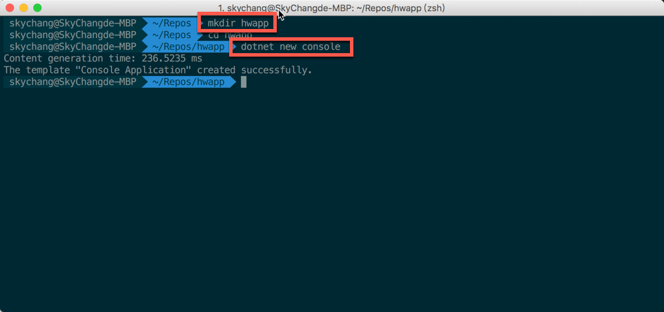
完成之後，我們要使用
1 | dotnet restore |
來下載必要的 package，在未來，.NET Core 的開發，都會將所有的 Lib ，包成一個小小的 package，
而不是以前那麼大一包的 .NET Framework 了..
這樣的用途，也讓每個 Package 可以很敏捷的開發與更新，至於缺點，可能就是相依性問題了吧….
最後，我們執行
1 | dotnet run |
就可以把 Hello World 給 run 起來了！！！
至此，我們人生第一個 macOS C# 應用程式就完成了！！！ ( mono 表示 : …….)
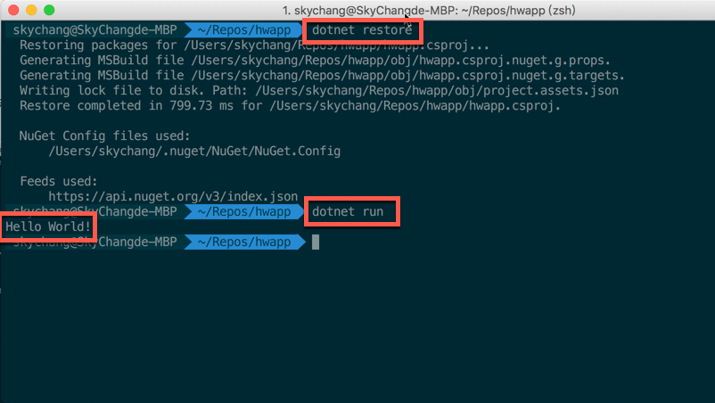
使用 Visual Studio Code 開發
工欲善其事，必先利其器，既然要在 macOS 寫 .NET Code ，自然也要有一個好的 Tool，
所以我們這邊就要使用 Visual Studio Code，當然這個也不是什麼新玩意了，
小弟在這邊也不多作介紹，但值得一提的是，
Visual Studio Code 是 Disgin Pattern 這本書作者“四人幫” 的其中一位 Erich Gamma 所領導的團隊！！
而且，是使用 JS ( TypeScript ) 來撰寫完成的喔！！也是完全開源！！
( 神人做什麼都是神人啊!!!! )
當我們使用 Visual Studio Code 開啟剛剛的專案後，他就會跳出一個資訊，建議我們來裝一下 C# 擴充套件。
備註 : 您可以使用終端機，在專案的目錄下使用 Code . 來開啟專案，這樣他會自動載入當前位置，
如果 Code 這個指令沒有用，可以參考這邊進行設定。
接著，我們當然就選擇安裝嚕！！
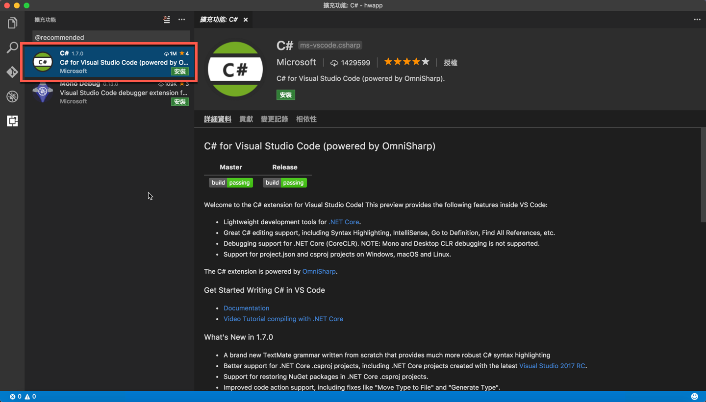
如果一開始沒有安裝最新版的 OpenSSL ，則會出現底下的畫面。
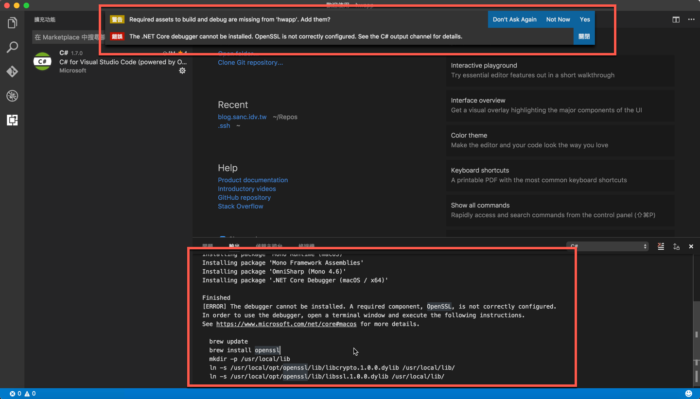
如果安裝成功，會出現底下的畫面。
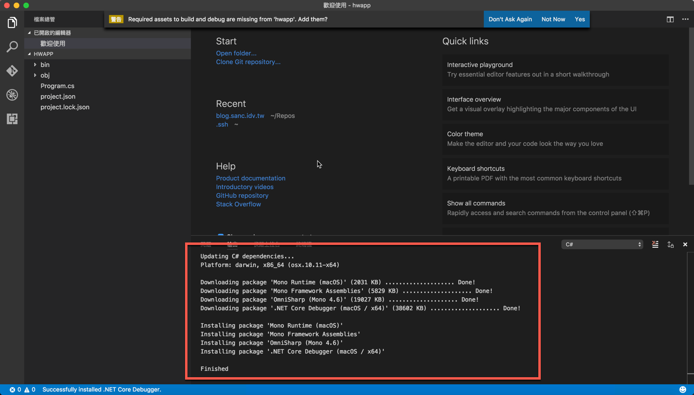
到這邊為止，.NET Core 就已經安裝完畢了，雖然還有很多 Visual Studio Code 的功能，
但這邊就暫時不提嚕。
建立 ASP.NET Core Hello World
既然，有 dotnet new 這個指令可以建立 Command Line Application，
那自然也會有可以建立 Web 的指令嚕！
首先，我們要先建立一個新的目錄，來放置我們的新網站，
目錄建立完後，我們就可以用底下指令進行建立。
1 | dotnet new mvc |

完成後，一樣就是 dotnet restore 和 dotnet run 來執行，
預設的網站，會 run 在 5000 port。
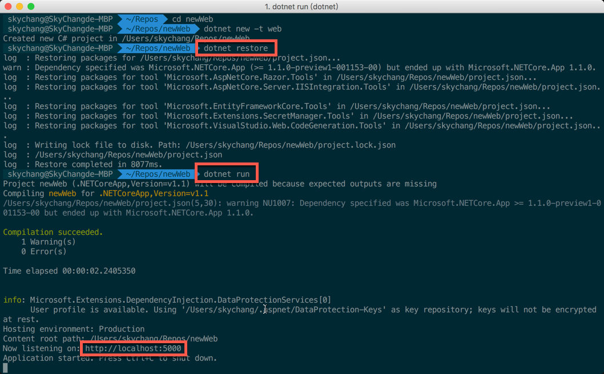
接下來，我們就可以使用瀏覽器來看到熟悉的第一個網站。
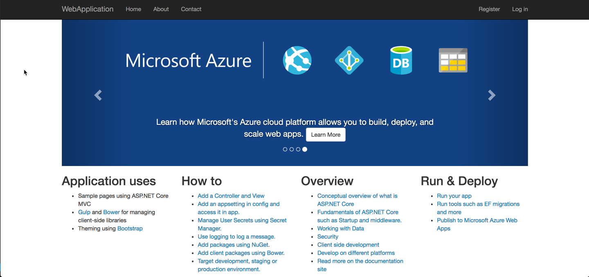
至於 dotnet new ，目前可以建立的東西，可以參考文件
但上面的網址，目前資訊還沒完全更新。
大家也可以參考底下此張截圖。
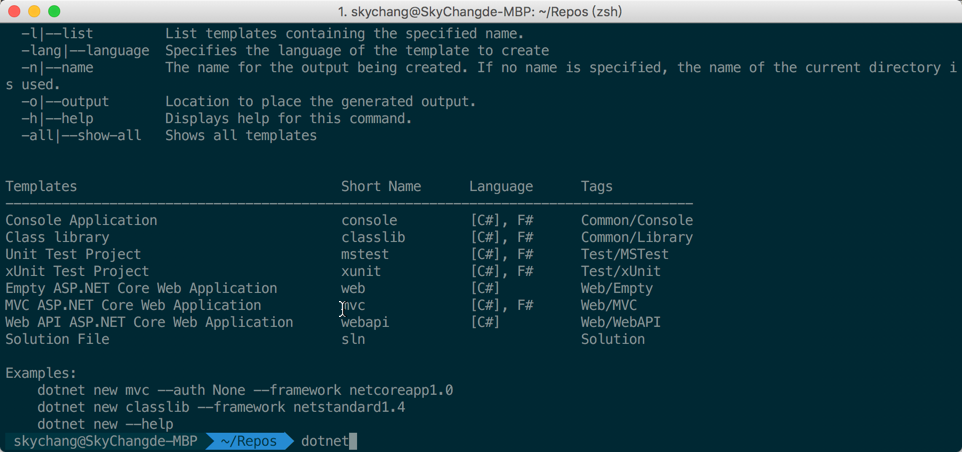
後記
和以前比起來，隨著時間進步，現在在 macOS 上開發，真的超級友善了，
雖然這篇沒有提到什麼 ASP.NET Core 的高深技術，但至少我們先把環境搞定了，
後面，我們會隨著建立一個應用程式，一步一步的來了解 ASP.NET Core。
參考資料
- https://msdn.microsoft.com/zh-tw/virtualization/windowscontainers/quick_start/quick_start_windows_10
- https://en.wikipedia.org/wiki/Erich_Gamma
- https://code.visualstudio.com/docs/setup/mac
- https://www.microsoft.com/net/download/core
- https://docs.microsoft.com/en-us/aspnet/core/getting-started
- https://github.com/dotnet/cli
- https://github.com/dotnet/core/tree/master/release-notes
- https://github.com/dotnet/cli/blob/rel/1.0.0/Documentation/ProjectJsonToCSProj.md